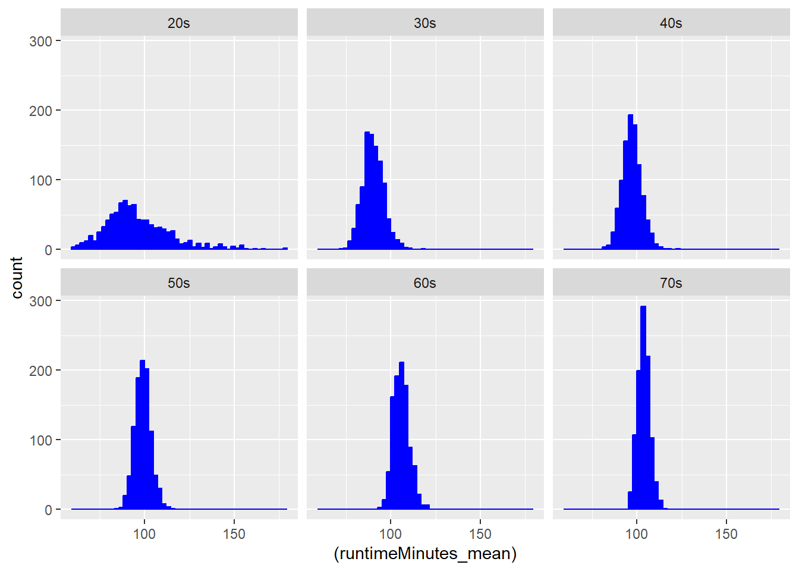

library(tidyverse)
library(ggplot2)
f <- "https://raw.githubusercontent.com/difiore/ada-datasets/main/IMDB-movies.csv"
d <- read_csv(f, col_names = TRUE)excercise-05
Challenge 1
Step 1: Load the necessary dataset as a tibble.
Step 2: A single-line statement to filter movies released between 1920 and 1979 while creating a new decade column.
d <- d |>
arrange(startYear) |>
filter(startYear >= 1920 & startYear <= 1979, na.rm = TRUE) |>
filter(runtimeMinutes >= 60 & runtimeMinutes <=180, na.rm = TRUE) |>
mutate(decades = paste0(substr(as.character(startYear), 3, 3), "0s"))Step 3: Use ggplot2 to plot histograms of runtimeMinutes for each decade.
plot_1 <- ggplot(data = d, aes( x = (runtimeMinutes))) +
geom_histogram(fill = "pink", color = "pink", bins = 50) +
facet_wrap(~decades, ncol = 3) +
theme(legend.position = "none")
print(plot_1)Step 4: A single-line statement to compute the population mean and standard deviation of runtimeMinutes for each decade and store the results in a new dataframe called results.(results)
results <- d |>
group_by(decades) |>
summarise(runtimeMinutes_mean = mean(runtimeMinutes, na.rm = TRUE),
runtimeMinutes_sd = sd(runtimeMinutes, na.rm = TRUE))
print(results)# A tibble: 6 × 3
decades runtimeMinutes_mean runtimeMinutes_sd
<chr> <dbl> <dbl>
1 20s 96.3 26.2
2 30s 90.3 17.3
3 40s 97.2 19.1
4 50s 98.9 19.2
5 60s 106. 21.2
6 70s 104. 18.0Step 5: Draw a random sample of 100 movies per decade without replacement and compute the sample mean and standard deviation of runtimeMinutes. (single_sample)
single_sample <- d |>
group_by(decades) |>
slice_sample(n = 100, replace = FALSE) |>
summarise(
runtimeMinutes_mean = mean(runtimeMinutes, na.rm = TRUE),
runtimeMinutes_sd = sd(runtimeMinutes, na.rm = TRUE)
)
print(single_sample)# A tibble: 6 × 3
decades runtimeMinutes_mean runtimeMinutes_sd
<chr> <dbl> <dbl>
1 20s 92.8 25.2
2 30s 92.1 17.4
3 40s 96.4 20.0
4 50s 101. 21.3
5 60s 107. 21.3
6 70s 103. 16.5Step 6: Calculate the standard error of the population mean runtimeMinutes for each decade using the sample standard deviation and n = 100. (single_sample_se)
single_sample_se <- single_sample |>
mutate(runtimeMinutes_se = runtimeMinutes_sd/sqrt(100)) |>
select(decades, runtimeMinutes_se)
print(single_sample_se)# A tibble: 6 × 2
decades runtimeMinutes_se
<chr> <dbl>
1 20s 2.52
2 30s 1.74
3 40s 2.00
4 50s 2.13
5 60s 2.13
6 70s 1.65Step 7: Compare sample mean estimates to the actual population mean and the SE based on the population standard deviation for samples of size 100 per decade. (comparison)
results_se <- results |>
mutate(runtimeMinutes_se = runtimeMinutes_sd/sqrt(100))
combined <- results_se |>
left_join(single_sample_se, by = "decades", suffix = c("_results", "_sample"))
comparison <- combined |>
select(decades, runtimeMinutes_se_results, runtimeMinutes_se_sample)
print(comparison)# A tibble: 6 × 3
decades runtimeMinutes_se_results runtimeMinutes_se_sample
<chr> <dbl> <dbl>
1 20s 2.62 2.52
2 30s 1.73 1.74
3 40s 1.91 2.00
4 50s 1.92 2.13
5 60s 2.12 2.13
6 70s 1.80 1.65Step 8: Generate a sampling distribution of mean runtimeMinutes for each decade by drawing 1000 random samples of 100 movies without replacement, then calculate the mean and standard deviation for each sample. (sample_distribution)
library(infer)Warning: package 'infer' was built under R version 4.2.3sd <- d |>
rep_slice_sample(n = 100, reps = 1000)
sample_distribution <- sd |>
group_by(replicate, decades) |>
summarise(
runtimeMinutes_mean = mean(runtimeMinutes, na.rm = TRUE),
runtimeMinutes_sd = sd(runtimeMinutes, na.rm = TRUE)
)`summarise()` has grouped output by 'replicate'. You can override using the
`.groups` argument.Step 9: Calculate the mean and standard deviation of the sampling distribution of sample means for each decade, then plot a histogram for each decade. The mean should estimate the population mean, and the standard deviation estimates the standard error for that sample size.
Bonus Question: What shape does it have? The shape is similar to that of a normal distribution curve.
sample_distribution_se <- sample_distribution |>
mutate(runtimeMinutes_se = runtimeMinutes_sd/sqrt(100))
plot_2 <- ggplot(data = sample_distribution, aes( x = (runtimeMinutes_mean))) +
geom_histogram(fill = "blue", color = "blue", bins = 50) +
facet_wrap(~decades, ncol = 3) +
theme(legend.position = "none")
print(plot_2)
Step 10: Compare the standard error in runtimeMinutes for samples of size 100 from each decade, using: [1] the first sample of 100 movies, [2] the known population standard deviations, and [3] the sampling distribution of sample means for each decade. (comparison_2)
sample_distribution_se_solidified <- sample_distribution_se |>
group_by(decades) |>
summarise(runtimeMinutes_se = mean(runtimeMinutes_se, na.rm = TRUE))
combined_2 <- sample_distribution_se_solidified |>
left_join(single_sample_se, by = "decades", suffix = c("_distribution", "_sample"))
comparison_2 <- combined_2 |>
select(decades, runtimeMinutes_se_distribution, runtimeMinutes_se_sample)
print(comparison_2)# A tibble: 6 × 3
decades runtimeMinutes_se_distribution runtimeMinutes_se_sample
<chr> <dbl> <dbl>
1 20s 2.22 2.52
2 30s 1.62 1.74
3 40s 1.87 2.00
4 50s 1.85 2.13
5 60s 2.09 2.13
6 70s 1.77 1.65Challenge 2
Step 1: Load the necessary dataset as a tibble.
r <- "https://raw.githubusercontent.com/difiore/ada-datasets/refs/heads/main/zombies.csv"
z <- read_csv(r, col_names = TRUE)
library(gridExtra)
library(infer)Step 2: Calculate the population mean and standard deviation for each quantitative random variable in the dataset (height, weight, age, number of zombies killed, and years of education). (zombie.world)
zombie.world <- z |>
summarise(height_mean = mean(height, na.rm = TRUE),
height_sd = sd(height, na.rm = TRUE),
weight_mean = mean(weight, na.rm = TRUE),
weight_sd = sd(weight, na.rm = TRUE),
age_mean = mean(age, na.rm = TRUE),
age_sd = sd(age, na.rm = TRUE),
zombies_killed_mean = mean(zombies_killed, na.rm = TRUE),
zombies_killed_sd = sd(zombies_killed, na.rm = TRUE),
years_of_education_mean = mean(years_of_education, na.rm = TRUE),
years_of_education_sd = sd(years_of_education, na.rm = TRUE),
)
print(zombie.world)# A tibble: 1 × 10
height_mean height_sd weight_mean weight_sd age_mean age_sd
<dbl> <dbl> <dbl> <dbl> <dbl> <dbl>
1 67.6 4.31 144. 18.4 20.0 2.97
# ℹ 4 more variables: zombies_killed_mean <dbl>, zombies_killed_sd <dbl>,
# years_of_education_mean <dbl>, years_of_education_sd <dbl>Step 3:Use {ggplot} and make boxplots of each of these variables by gender.
b1 <- ggplot(z, aes(x = gender, y = weight, fill = gender)) +
geom_boxplot(alpha = 1, outlier.shape = NA) +
labs(title = "Weight by Gender", x = "Gender", y = "Weight") +
theme(legend.position = "none")
b2 <- ggplot(z, aes(x = gender, y = height, fill = gender)) +
geom_boxplot(alpha = 1, outlier.shape = NA) +
labs(title = "Height by Gender", x = "Gender", y = "Height") +
theme(legend.position = "none")
b3 <- ggplot(z, aes(x = gender, y = age, fill = gender)) +
geom_boxplot(alpha = 1, outlier.shape = NA) +
labs(title = "Age by Gender", x = "Gender", y = "Age") +
theme(legend.position = "none")
b4 <- ggplot(z, aes(x = gender, y = years_of_education, fill = gender)) +
geom_boxplot(alpha = 1, outlier.shape = NA) +
labs(title = "Years of Education by Gender", x = "Gender", y = "Years of Education") +
theme(legend.position = "none")
b5 <- ggplot(z, aes(x = gender, y = zombies_killed, fill = gender)) +
geom_boxplot(alpha = 1, outlier.shape = NA) +
labs(title = "Zombies Killed by Gender", x = "Gender", y = "Zombies Killed") +
theme(legend.position = "none")
grid.arrange(b1, b2, b3, b4, b5, ncol = 2)Step 4:Use {ggplot} to create scatterplots of height and weight vs. age, with different colors for males and females.
s1 <- ggplot(z, aes(x = age, y = height, color = gender)) +
geom_point(alpha = 1, size = 1) +
labs(title = "Height vs. Age", x = "Age", y = "Height (cm)", color = "Gender") +
scale_color_manual(values = c("pink", "blue"))
s2 <- ggplot(z, aes(x = age, y = weight, color = gender)) +
geom_point(alpha = 1, size = 1) +
labs(title = "Weight vs. Age", x = "Age", y = "Weight (kg)", color = "Gender") +
scale_color_manual(values = c("pink", "blue"))
grid.arrange(s1, s2, ncol = 2)Step 5:
Use {ggplot} and make histograms.
h1 <- ggplot(z, aes(x = weight)) +
geom_histogram(aes(y = ..density..), bins = 30, fill = "lightgreen", alpha = 1) +
geom_density(color = "red", size = 1) +
labs(title = "Histogram of Weight", x = "Weight", y = "Density")Warning: Using `size` aesthetic for lines was deprecated in ggplot2 3.4.0.
ℹ Please use `linewidth` instead.h2 <- ggplot(z, aes(x = height)) +
geom_histogram(aes(y = ..density..), bins = 30, fill = "lightgreen", alpha = 1) +
geom_density(color = "red", size = 1) +
labs(title = "Histogram of Height", x = "Height", y = "Density")
h3 <- ggplot(z, aes(x = age)) +
geom_histogram(aes(y = ..density..), bins = 30, fill = "lightgreen", alpha = 1) +
geom_density(color = "red", size = 1) +
labs(title = "Histogram of Age", x = "Age", y = "Density")
h4 <- ggplot(z, aes(x = years_of_education)) +
geom_histogram(aes(y = ..density..), bins = 30, fill = "lightgreen", alpha = 1) +
geom_density(color = "red", size = 1) +
labs(title = "Histogram of Years Of Education", x = "Years Of Education", y = "Density")
h5 <- ggplot(z, aes(x = zombies_killed)) +
geom_histogram(aes(y = ..density..), bins = 30, fill = "lightgreen", alpha = 1) +
geom_density(color = "red", size = 1) +
labs(title = "Histogram of Zombies Killed", x = "Zombies Killed", y = "Density")
grid.arrange(h1, h2, h3, h4, h5, ncol = 2)Warning: The dot-dot notation (`..density..`) was deprecated in ggplot2 3.4.0.
ℹ Please use `after_stat(density)` instead.Use {ggplot} and make Q-Q plots.
q1 <- ggplot(z, aes(sample = weight)) +
stat_qq(size = 2, alpha = 1) +
stat_qq_line(color = "red", size = 1) +
labs(title = "Q-Q Plot of Weight", x = "Theoretical Quantiles", y = "Sample Quantiles")
q2 <- ggplot(z, aes(sample = height)) +
stat_qq(size = 2, alpha = 1) +
stat_qq_line(color = "red", size = 1) +
labs(title = "Q-Q Plot of Height", x = "Theoretical Quantiles", y = "Sample Quantiles")
q3 <- ggplot(z, aes(sample = age)) +
stat_qq(size = 2, alpha = 1) +
stat_qq_line(color = "red", size = 1) +
labs(title = "Q-Q Plot of Age", x = "Theoretical Quantiles", y = "Sample Quantiles")
q4 <- ggplot(z, aes(sample = years_of_education)) +
stat_qq(size = 2, alpha = 1) +
stat_qq_line(color = "red", size = 1) +
labs(title = "Q-Q Plot of Years of Education", x = "Theoretical Quantiles", y = "Sample Quantiles")
q5 <- ggplot(z, aes(sample = zombies_killed)) +
stat_qq(size = 2, alpha = 1) +
stat_qq_line(color = "red", size = 1) +
labs(title = "Q-Q Plot of Zombies Killed", x = "Theoretical Quantiles", y = "Sample Quantiles")
grid.arrange(q1, q2, q3, q4, q5, ncol = 2)Step 6:Use sample_n() or slice_sample() from {dplyr} to sample one subset of 50 zombie apocalypse survivors (without replacement). Calculate the mean and sample standard deviation for each variable, then estimate the standard error and construct a 95% confidence interval for each mean.
sample_z <- z |>
group_by(gender) |>
slice_sample(n = 50, replace = FALSE) |>
summarise(
height_mean = mean(height, na.rm = TRUE),
height_sd = sd(height, na.rm = TRUE),
weight_mean = mean(weight, na.rm = TRUE),
weight_sd = sd(weight, na.rm = TRUE),
age_mean = mean(age, na.rm = TRUE),
age_sd = sd(age, na.rm = TRUE),
years_of_education_mean = mean(years_of_education, na.rm = TRUE),
years_of_education_sd = sd(years_of_education, na.rm = TRUE),
zombies_killed_mean = mean(zombies_killed, na.rm = TRUE),
zombies_killed_sd = sd(zombies_killed, na.rm = TRUE)
) |>
mutate(height_se = height_sd/sqrt(100),
weight_se = weight_sd/sqrt(100),
age_se = age_sd/sqrt(100),
years_of_education_se = years_of_education_sd/sqrt(100),
zombies_killed_se = zombies_killed_sd/sqrt(100))
print(sample_z)# A tibble: 2 × 16
gender height_mean height_sd weight_mean weight_sd age_mean age_sd
<chr> <dbl> <dbl> <dbl> <dbl> <dbl> <dbl>
1 Female 65.2 3.59 134. 15.3 19.4 3.17
2 Male 68.5 5.08 149. 19.8 19.9 3.65
# ℹ 9 more variables: years_of_education_mean <dbl>,
# years_of_education_sd <dbl>, zombies_killed_mean <dbl>,
# zombies_killed_sd <dbl>, height_se <dbl>, weight_se <dbl>, age_se <dbl>,
# years_of_education_se <dbl>, zombies_killed_se <dbl>ci_height <- sample_z$height_mean + qnorm(c(0.05/2, 1 - 0.05/2))*sample_z$height_se
ci_weight <- sample_z$weight_mean + qnorm(c(0.05/2, 1 - 0.05/2))*sample_z$weight_se
ci_age <- sample_z$age_mean + qnorm(c(0.05/2, 1 - 0.05/2))*sample_z$age_se
ci_years_of_education <- sample_z$years_of_education_mean + qnorm(c(0.05/2, 1 - 0.05/2))*sample_z$years_of_education_se
ci_zombies_killed <- sample_z$zombies_killed_mean + qnorm(c(0.05/2, 1 - 0.05/2))*sample_z$zombies_killed_se
print(ci_height)[1] 64.48535 69.51852print(ci_weight)[1] 130.9822 152.5346print(ci_age)[1] 18.79976 20.57205print(ci_years_of_education)[1] 2.647512 3.706923print(ci_zombies_killed)[1] 2.624105 2.965951Step 7: Then draw another 199 random samples of 50 zombie apocalypse survivors out of the population and calculate the mean for each of the these samples. Together with the first sample you drew out, you now have a set of 200 means for each variable (each of which is based on 50 observations), which constitutes a sampling distribution for each variable.
sample199_z <- z |>
rep_slice_sample(n = 50, reps = 199)
sample200_z <- sample199_z |>
merge(sample_z) |>
summarise(
height_mean = mean(height, na.rm = TRUE),
height_sd = sd(height, na.rm = TRUE),
weight_mean = mean(weight, na.rm = TRUE),
weight_sd = sd(weight, na.rm = TRUE),
age_mean = mean(age, na.rm = TRUE),
age_sd = sd(age, na.rm = TRUE),
years_of_education_mean = mean(years_of_education, na.rm = TRUE),
years_of_education_sd = sd(years_of_education, na.rm = TRUE),
zombies_killed_mean = mean(zombies_killed, na.rm = TRUE),
zombies_killed_sd = sd(zombies_killed, na.rm = TRUE)
)Step 8: Plot the sampling distributions for each variable mean.
# plot_height200 <- ggplot(data = d, aes( x = (height))) +
# geom_histogram(fill = "blue", color = "blue", bins = 50) +
# theme(legend.position = "none")
#
# plot_weight200 <- ggplot(data = d, aes( x = (weight))) +
# geom_histogram(fill = "blue", color = "blue", bins = 50) +
# theme(legend.position = "none")
#
# plot_age200 <- ggplot(data = d, aes( x = (age))) +
# geom_histogram(fill = "blue", color = "blue", bins = 50) +
# theme(legend.position = "none")
#
# plot_years_of_education200 <- ggplot(data = d, aes( x = (years_of_education))) +
# geom_histogram(fill = "blue", color = "blue", bins = 50) +
# theme(legend.position = "none")
#
# plot_zombies_killed200 <- ggplot(data = d, aes( x = (zombies_killed))) +
# geom_histogram(fill = "blue", color = "blue", bins = 50) +
# theme(legend.position = "none")
#
# grid.arrange(plot_height200, plot_weight200, plot_age200, plot_years_of_education200, plot_zombies_killed200)Step 9: Construct a 95% confidence interval for each mean directly from the sampling distribution of sample means using the central 95% that distribution (i.e., by setting the lower and upper CI bounds to 2.5% and 97.5% of the way through that distribution).
ci_sample200_z <- quantile(sample200_z, c(0.025, 0.975))Warning in xtfrm.data.frame(x): cannot xtfrm data framesprint(ci_sample200_z) 2.5% 97.5%
1 1.684073 126.7443Step 10: Finally, use bootstrapping to generate a 95% confidence interval for each variable mean by resampling 1000 samples, with replacement, from your original sample (i.e., by setting the lower and upper CI bounds to 2.5% and 97.5% of the way through the sampling distribution generated by bootstrapping).